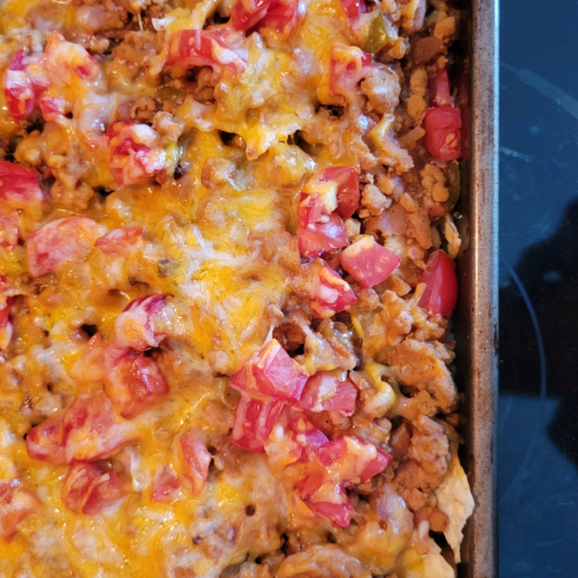

Taco Bake Casserole

Description
This quick and easy taco bake will satisfy even the most picky eaters. You can modify it to add things you love. It's yummy and so easy to make! Top with tomatoes, lettuce, salsa or whatever you like on your Mexican food.
Ingredients
- cooking spray (such as Pam)
- 1 1/2 lbs ground beef
- 1 cup chopped onion
- 1/2 cup water
- 1 oz package of taco seasoning mix
- 10 oz can of refried beans
- 1/2 cup salsa
- 6 oz can sliced black olives
- 4 oz can diced green chiles
- 15 taco shells, broken up, or more to taste
- 2 cups shredded Cheddar cheese
Steps
- Preheat oven to 375 degrees F (190 degrees C). Spray a 9x13-inch baking pan with cooking spray.
- Cook ground beef and onions in a skillet over medium heat until beef is browned, 7 to 10 minutes; drain grease. Stir in water and taco seasoning; cook, stirring often, until thickened, about 2 minutes. Add refried beans, salsa, olives, and green chiles. Cook and stir over low heat until ingredients are warmed through, 3 to 4 minutes.
- Place half of the taco shells in the bottom of the baking dish. Pour in half of the ground beef mixture; sprinkle with half of the Cheddar cheese. Repeat with remaining taco shells, ground beef mixture, and Cheddar cheese.
- Bake in the preheated oven until cheese is melted and bubbly, 20 to 25 minutes.